NGOẠI TÂM THU — NHĨ, BỘ NỐI VÀ THẤT
6.1. Ngoại tâm thu nhĩ (Premature Atrial Complex – PAC) trên ECG
Ngoại tâm thu nhĩ (premature atrial complex – PAC), ổ ngoại vị nhĩ (atrial ectopics), ngoại tâm thu nhĩ (atrial extrasystoles), nhát bóp nhĩ đến sớm (atrial premature beats), khử cực nhĩ đến sớm (atrial premature depolarisations)
Nhịp tim (Heart Rhythm)

Các nhịp tim cơ bản (Basic Heart Rhythms)
- Nhịp tim được quyết định bởi vị trí (hoặc các vị trí) phát xung với tần số cao nhất (ức chế vượt tần số – overdrive suppression)
- Có 3 nhịp tim cơ bản
- Nhịp xoang (xung được phát ra từ nút xoang – SA node)
- Nhịp bộ nối (xung được phát ra từ bộ nối nhĩ thất – AV junction)
- Nhịp thất (xung được phát ra từ các sợi Purkinje trong tâm thất)
- Nhịp xoang là nhịp tim sinh lý
- Vì nút xoang nhĩ (sinoatrial – SA node) phát xung với tần số cao nhất (ức chế vượt tần số)
- Nút xoang được gọi là chủ nhịp tiên phát
(primary pacemaker)
Ngoại tâm thu nhĩ (Atrial Premature Contraction – APC)
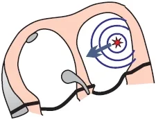
- Thường gặp nhất là xảy ra trên nền nhịp xoang
- Xuất phát từ một ổ ngoại vị trong tâm nhĩ
- Xung khởi phát trước thời điểm khử cực dự kiến của nút xoang
- Sóng P sẽ khác với sóng P xoang
- Vì vectơ ngoại vị có hướng khác với vectơ xoang
- Phức bộ QRS sẽ giống hệt phức bộ QRS xoang
- Vì tâm thất được hoạt hoá qua bộ nối nhĩ thất, giống như trong nhịp xoang
- APC thường xuất hiện khi:
- Căng thẳng, cà phê, rượu, hút thuốc...
- APC thường lành tính và không cần điều trị
- Đôi khi bệnh nhân cảm nhận được dưới dạng hồi hộp trống ngực (tim đập thình thịch)
- Chúng hay gặp hơn ở những quả tim có biến đổi cấu trúc
- APC có thể khởi phát nhịp nhanh do vòng vào lại (re-entry):
- AVNRT (nhịp nhanh vào lại nút nhĩ thất)
- AVRT (nhịp nhanh vào lại nhĩ thất)
- Nhịp nhanh thất
- Xoắn đỉnh (Torsades de Pointes)
- Có 3 loại ngoại tâm thu:
- Trên thất:
- Ngoại tâm thu nhĩ
- Ngoại tâm thu bộ nối
- Ngoại tâm thu thất
- Trên thất:
ECG và ngoại tâm thu nhĩ (ECG and Atrial Premature Contraction)
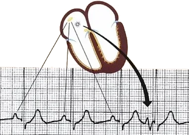
- Sóng P ngoại vị bất thường (có hình dạng khác sóng P xoang)
- Theo sau là một phức bộ QRS hẹp (< 0,12s)
- Có thể bị che khuất bởi sóng T
- Trong trường hợp này, nó giống với ngoại tâm thu bộ nối
- Sóng P ngược dòng (âm) xuất hiện:
- Nếu ổ ngoại vị nằm ở bộ nối nhĩ thất
- Phân biệt với ngoại tâm thu bộ nối dựa vào khoảng PQ
- Khoảng PQ < 0,12s - ngoại tâm thu bộ nối
- Khoảng PQ > 0,12s - ngoại tâm thu nhĩ
- Trên ECG, nó xuất hiện sớm hơn sóng P xoang dự kiến
- Nghỉ bù không hoàn toàn
- APC luôn tái lập (reset) nút xoang
- APC bị block
- Nếu một APC xảy ra trong giai đoạn trơ của bộ nối nhĩ thất
- Nó bị block lại tại bộ nối nhĩ thất
- Xuất hiện một sóng P bất thường không kèm phức bộ QRS
- Nếu một APC xảy ra trong giai đoạn trơ của bộ nối nhĩ thất
Nghỉ bù không hoàn toàn (Incomplete Compensatory Pause)
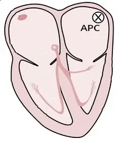
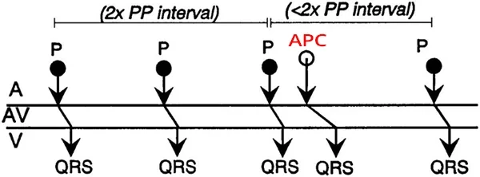
Ngoại tâm thu nhĩ và nghỉ bù không hoàn toàn
- Sơ đồ bậc thang (laddergram) cho thấy đường lan truyền của xung qua hệ thống dẫn truyền
- Khoảng PP (RR) có APC ngắn hơn hai lần khoảng PP (RR) không có APC
- Vì APC xuất phát từ một ổ trong tâm nhĩ và tái lập nút xoang
- Nghỉ bù không hoàn toàn được gây ra bởi:
- Ngoại tâm thu nhĩ
- Ngoại tâm thu bộ nối
- Rất hiếm khi là ngoại tâm thu thất (ventricular premature contraction – VPC)
- Chỉ khi VPC dẫn truyền ngược dòng qua nút nhĩ thất và tái lập nút xoang
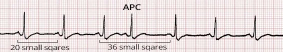
Ngoại tâm thu nhĩ và nghỉ bù không hoàn toàn
- Khoảng PP (RR) có APC (36) ngắn hơn hai lần khoảng PP (RR) không có APC (2x20)
- Ngoại tâm thu nhĩ (APC)
- Xuất hiện sớm hơn sóng P (phức bộ QRS) xoang dự kiến
- Phức bộ QRS hẹp (<0,12s)
- Sóng P giống với sóng P xoang
- Vì ổ ngoại vị nằm gần nút xoang, khi đó vectơ nhĩ có hướng tương tự
Nghỉ bù hoàn toàn (Complete Compensatory Pause)
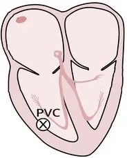
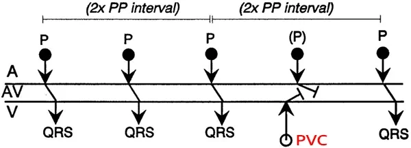
Ngoại tâm thu thất và nghỉ bù hoàn toàn
- Nghỉ bù hoàn toàn hầu như luôn đi kèm với ngoại tâm thu thất (ventricular premature contraction – VPC)
- Khoảng PP (RR) có VPC đúng bằng hai lần khoảng PP (RR) không có VPC
- Vì VPC xuất phát trong tâm thất và không đi qua nút nhĩ thất, VPC không tái lập nút xoang
- Do đó, nút xoang tiếp tục phát xung đều đặn (nhịp xoang)
- Hiếm khi, VPC có thể dẫn truyền ngược dòng qua nút nhĩ thất và tái lập nút xoang
- Vì vậy, hiếm khi có thể gặp nghỉ bù không hoàn toàn với VPC
- Vì VPC xuất phát trong tâm thất và không đi qua nút nhĩ thất, VPC không tái lập nút xoang
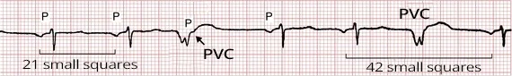
Ngoại tâm thu thất và nghỉ bù hoàn toàn
- Khoảng PP (RR) có VPC (42) đúng bằng hai lần khoảng PP (RR) không có VPC (2x21)
- Ngoại tâm thu thất (VPC)
- Xuất hiện sớm hơn phức bộ QRS xoang dự kiến
- Phức bộ QRS giãn rộng (>0,12s)
- Sóng P được chỉ ra ngay sau QRS
- VPC không tái lập nút xoang vì VPC không đi qua nút nhĩ thất
Ngoại tâm thu nhĩ dẫn truyền lệch hướng (Aberrant Atrial Extrasystole)
- Ngoại tâm thu nhĩ dẫn truyền lệch hướng (aberrant)
- Trong quá trình dẫn truyền ngoại tâm thu nhĩ xuống tâm thất, một phần nào đó của hệ thống dẫn truyền có thể đang ở giai đoạn trơ
- Xuất hiện một ngoại tâm thu nhĩ - một sóng P bất thường, có thể theo sau bởi:
- Block nhánh phải bó Tawar (right Tawar bundle branch block)
- Block nhánh trái bó Tawar (left Tawar bundle branch block)
- Block phân nhánh trái trước
- Block phân nhánh trái sau
- Ngoại tâm thu nhĩ dẫn truyền lệch hướng thường gặp nhất là có hình ảnh block nhánh phải bó Tawar
- Vì nhánh phải bó Tawar có giai đoạn trơ dài nhất
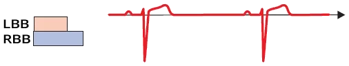
Nhịp xoang không có ngoại tâm thu nhĩ
- Nút xoang phát xung đều đặn (các sóng P), các xung này được dẫn xuống tâm thất (các phức bộ QRS)
- LTR: độ dài giai đoạn trơ của nhánh trái bó Tawar
- PTR: độ dài giai đoạn trơ của nhánh phải bó Tawar
- Giai đoạn trơ xuất hiện ngay sau khi một xung đi qua hệ thống dẫn truyền
- Trong giai đoạn trơ, hệ thống dẫn truyền không dẫn xung
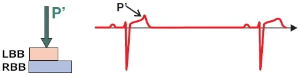
Nhịp xoang và ngoại tâm thu nhĩ bị block
- Ngoại tâm thu xảy ra trong giai đoạn trơ, trong thời kỳ tái cực thất (các sóng T)
- Ngoại tâm thu đã khử cực một phần tâm nhĩ, nhưng không đi qua hệ thống dẫn truyền xuống tâm thất
- Ngoại tâm thu biểu hiện dưới dạng một sóng P´ nằm trên sóng T
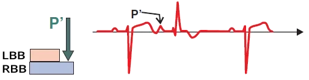
Ngoại tâm thu nhĩ dẫn truyền lệch hướng
- Ngoại tâm thu (P´) xảy ra vào thời điểm nhánh trái Tawar không còn ở giai đoạn trơ
- Nhưng nhánh phải vẫn còn ở giai đoạn trơ, khiến ngoại tâm thu bị block tại nhánh phải Tawar
- Do đó, ngoại tâm thu (phức bộ QRS) có hình dạng block nhánh phải Tawar
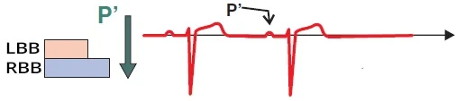
Ngoại tâm thu nhĩ
- Ngoại tâm thu (P´) xảy ra vào thời điểm các nhánh Tawar không còn ở giai đoạn trơ
- Ngoại tâm thu (phức bộ QRS) có hình dạng giống hệt một QRS xoang
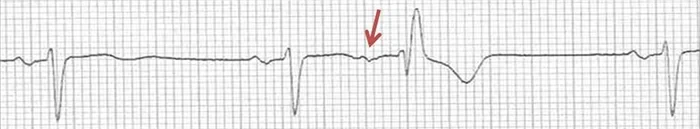
Ngoại tâm thu nhĩ dẫn truyền lệch hướng
- Sóng P của ngoại tâm thu nhĩ có hình dạng khác so với sóng P xoang
- Nghỉ bù không hoàn toàn
- Ngoại tâm thu xảy ra trong giai đoạn trơ của nhánh phải Tawar
- Do đó, QRS có hình dạng block nhánh phải Tawar
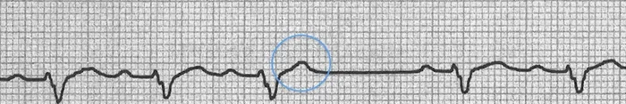
Ngoại tâm thu nhĩ bị block
- Sóng T có hình dạng khác so với các sóng T còn lại
- Bên trong sóng T có một sóng P của ngoại tâm thu nhĩ
- Tuy nhiên, sóng P này không dẫn xuống tâm thất vì nút nhĩ thất đang ở giai đoạn trơ
- Nghỉ bù không hoàn toàn
Phân loại ngoại tâm thu nhĩ (Atrial Extrasystoles - Classification)
- Ngoại tâm thu nhĩ theo số lượng ổ ngoại vị
- Đơn ổ (unifocal)
- Đa ổ (multifocal)
- Ngoại tâm thu nhĩ theo tần suất
- Đơn độc (isolated)
- Nhịp đôi (bigeminy)
- Nhịp ba (trigeminy)
- Nhịp bốn (quadrigeminy)
- Cặp đôi (couplet)
- Bộ ba (triplet)
Ngoại tâm thu nhĩ đơn ổ (Unifocal Atrial Extrasystole)
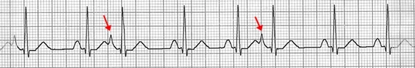
- Ngoại tâm thu nhĩ đơn ổ (đơn dạng – monomorphic)
- Ngoại tâm thu nhĩ xuất phát từ một ổ ngoại vị duy nhất và có hình dạng giống nhau (do đó gọi là đơn dạng)
- Mỗi ngoại tâm thu nhĩ đơn ổ có hình dạng giống nhau và sóng P giống nhau
Ngoại tâm thu nhĩ đơn ổ
- Trên ECG có 2 ngoại tâm thu nhĩ đơn ổ
- Phức bộ QRS hẹp (<0,12s)
- Xuất hiện sớm hơn phức bộ QRS xoang dự kiến
- Các sóng P khác với các sóng P xoang
- Cả hai sóng P ngoại vị đều có hình dạng giống nhau
- Vì chúng xuất phát từ cùng một ổ ngoại vị
- Nhịp nhanh nhĩ ổ (focal atrial tachycardia)
- Ổ ngoại vị phát xung với tần số > 100/phút và "làm ngưng" nút xoang (ức chế vượt tần số)
Ngoại tâm thu nhĩ đa ổ (Multifocal Atrial Extrasystole)
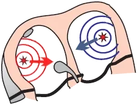
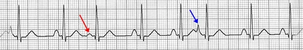
- Ngoại tâm thu nhĩ đa ổ (đa dạng – polytopic)
- Ngoại tâm thu nhĩ xuất phát từ nhiều ổ ngoại vị
- Ngoại tâm thu nhĩ từ mỗi ổ tạo ra một ngoại tâm thu (sóng P) có hình dạng khác nhau
- Trên ECG, các ngoại tâm thu nhĩ (các sóng P) có hình dạng khác nhau
- Ngoại tâm thu nhĩ xuất phát từ nhiều ổ ngoại vị
Ngoại tâm thu nhĩ đa ổ
- Trên ECG có 2 ngoại tâm thu nhĩ đa ổ
- Phức bộ QRS hẹp (<0,12s)
- Mỗi ngoại tâm thu nhĩ xuất phát từ một ổ ngoại vị khác nhau, do đó:
- Nó có sóng P khác nhau
- Nó có khoảng ghép (coupling interval) khác nhau
- Khoảng cách giữa ngoại tâm thu nhĩ và phức bộ QRS đứng trước
- Các phức bộ QRS giống nhau vì mỗi xung trên thất đều hoạt hoá tâm thất qua nút nhĩ thất
- Nếu nhịp tim được quyết định bởi chỉ các ngoại tâm thu nhĩ ngoại vị mà không có nút xoang, thì đó là:
- Nhịp nhĩ đa ổ (multifocal atrial rhythm)
Ngoại tâm thu nhĩ theo tính lặp lại (Atrial Extrasystoles by Repetition)
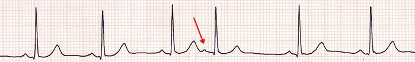
- Ngoại tâm thu nhĩ đơn độc
- Nhịp đôi (bigeminy)
- Nhịp ba (trigeminy)
- Nhịp bốn (quadrigeminy)
- Cặp đôi (couplet)
- Bộ ba (triplet)
Ngoại tâm thu nhĩ đơn độc
- Ngoại tâm thu nhĩ đơn độc xuất hiện trên ECG một cách rải rác
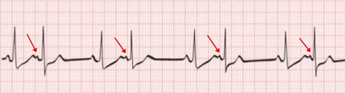
Nhịp đôi nhĩ (nhịp đôi kiểu nhĩ – atrial bigeminal rhythm)
- Cứ nhát bóp thứ hai là một ngoại tâm thu nhĩ
- Tim đập luân phiên theo nút xoang và ổ ngoại vị
- Nhịp đôi nhĩ đôi khi được gọi là nhịp đôi kiểu nhĩ (atrial bigeminal rhythm)
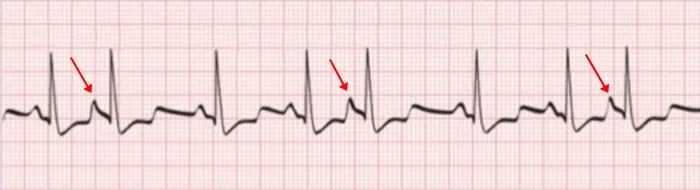
Nhịp ba nhĩ
- Cứ nhát bóp thứ ba là một ngoại tâm thu nhĩ
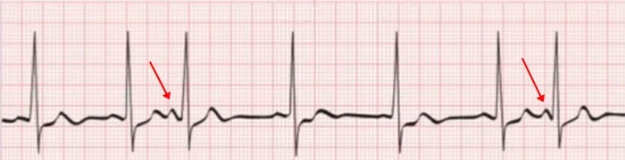
Nhịp bốn nhĩ
- Cứ nhát bóp thứ tư là một ngoại tâm thu nhĩ
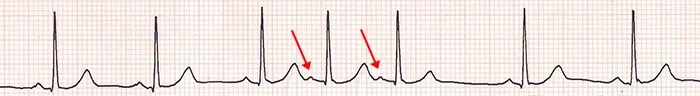
Cặp đôi nhĩ
- 2 ngoại tâm thu nhĩ liên tiếp nhau
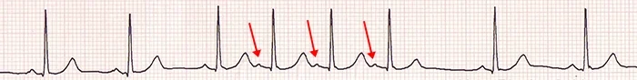
Bộ ba nhĩ
- 3 ngoại tâm thu nhĩ liên tiếp nhau
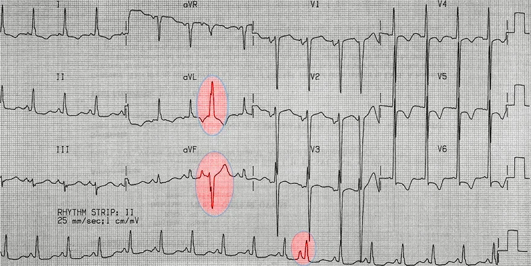
Ngoại tâm thu nhĩ dẫn truyền lệch hướng
- Ở các chuyển đạo chi (aVL, aVF, II), ngoại tâm thu được ghi nhận với QRS giãn rộng (>0,12s)
- Đây không phải ngoại tâm thu thất vì có một sóng P đứng trước nó
- Chuyển đạo II liên tục không nằm song song với các chuyển đạo chi
- Đây là một ngoại tâm thu nhĩ dẫn truyền lệch hướng
- Vì có một sóng P biến dạng đứng trước phức bộ QRS giãn rộng
- Không nghĩ tới nhát bóp hỗn hợp (fusion beat), vì khi đó phải có một sóng P xoang trước QRS
- Ngoại tâm thu không được ghi ở các chuyển đạo trước tim (V1, V6)
- Do đó, không thể xác định chính xác đây là block lệch hướng của nhánh trái hay nhánh phải bó Tawar
6.2. Ngoại tâm thu bộ nối (Premature Junctional Complex – PJC) trên ECG
Ngoại tâm thu bộ nối (premature junctional complex – PJC), ổ ngoại vị bộ nối (junctional ectopics), ngoại tâm thu bộ nối (junctional extrasystoles), nhát bóp bộ nối đến sớm (junctional premature beats), khử cực bộ nối đến sớm (junctional premature depolarisations), ngoại tâm thu bộ nối nhĩ thất (atrioventricular junctional premature complexes)
Nhịp tim (Heart Rhythm)
Các nhịp tim cơ bản (Basic Heart Rhythms)
- Nhịp tim được quyết định bởi vị trí (hoặc các vị trí) phát xung với tần số cao nhất (ức chế vượt tần số)
- Chúng ta biết 3 nhịp tim cơ bản
- Nhịp xoang (xung được phát ra từ nút xoang)
- Nhịp bộ nối (xung được phát ra từ bộ nối nhĩ thất)
- Nhịp thất (xung được phát ra từ các sợi Purkinje trong tâm thất)
- Nhịp xoang là nhịp tim sinh lý
- Vì nút xoang nhĩ (SA node) phát xung với tần số cao nhất (ức chế vượt tần số)
- Nút xoang được gọi là chủ nhịp tiên phát (bộ định tần)
Ngoại tâm thu bộ nối (Premature Junctional Complex – PJC)

- Bộ nối nhĩ thất (nút nhĩ thất và bó His) là một chủ nhịp thứ phát
- Bắt đầu phát xung khi có tình trạng suy yếu của nút xoang, dẫn đến nhịp bộ nối
- PJC xảy ra do khử cực sớm của bộ nối nhĩ thất
- Thường gặp nhất là trên nền nhịp xoang
- PJC thường xuất hiện do:
- Căng thẳng, caffeine, rượu, hút thuốc...
- PJC là loại ngoại tâm thu hiếm gặp nhất, hay gặp hơn là
- Ngoại tâm thu nhĩ
- Ngoại tâm thu thất
- PJC có thể khởi phát nhịp nhanh do vòng vào lại (re-entry):
- AVNRT (nhịp nhanh vào lại nút nhĩ thất)
- AVRT (nhịp nhanh vào lại nhĩ thất)
- Nhịp nhanh thất
- Xoắn đỉnh (Torsades de Pointes)
- Chúng ta phân biệt 3 loại ngoại tâm thu:
- Trên thất:
- Ngoại tâm thu nhĩ
- Ngoại tâm thu bộ nối (PJC)
- Ngoại tâm thu thất
- Trên thất:
ECG và ngoại tâm thu bộ nối (ECG and Premature Junctional Complex)
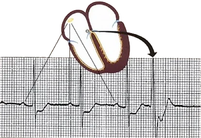
- Sóng P ngược dòng (âm)
- Âm ở các chuyển đạo dưới (II, III, aVF)
- Có thể nằm trước, trong, hoặc sau QRS
- Vectơ của sóng P ngược dòng
- Hướng từ bộ nối nhĩ thất về phía nút xoang
- Sóng P ngược dòng (âm) cũng xuất hiện:
- Trong ngoại tâm thu nhĩ
- Nếu ổ nhĩ nằm ở bộ nối nhĩ thất
- Điểm khác biệt nằm ở khoảng PQ
- Khoảng PQ < 0,12s - ngoại tâm thu bộ nối (PJC)
- Khoảng PQ > 0,12s - ngoại tâm thu nhĩ
- Trong ngoại tâm thu nhĩ
- Phức bộ QRS hẹp (<0,12s)
- Vì tâm thất được hoạt hoá qua hệ thống dẫn truyền
- Trên ECG, nó luôn xuất hiện sớm hơn phức bộ QRS xoang dự kiến
- Nghỉ bù không hoàn toàn
- PJC luôn tái lập nút xoang
Sóng P ngược dòng và ngoại tâm thu bộ nối (Retrograde P Wave and PJC)
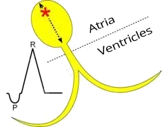
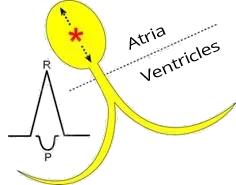
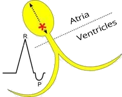
- Sóng P ngược dòng (âm) trước QRS
- PJC được tạo ra ở phần trên của bộ nối nhĩ thất
- Tâm nhĩ được hoạt hoá sớm hơn (sóng P) so với tâm thất (QRS)
- Sóng P ẩn trong phức bộ QRS
- PJC được tạo ra ở phần giữa của bộ nối nhĩ thất
- Tâm nhĩ và tâm thất được hoạt hoá đồng thời
- Sóng P ngược dòng bị ẩn bên trong phức bộ QRS
- Sóng P ngược dòng (âm) sau QRS
- PJC được tạo ra ở phần dưới của bộ nối nhĩ thất
- Tâm thất (QRS) được hoạt hoá sớm hơn tâm nhĩ (sóng P)
Nghỉ bù không hoàn toàn (Incomplete Compensatory Pause)
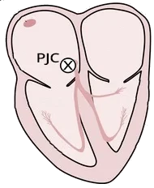
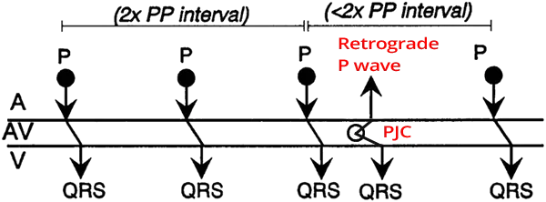
Ngoại tâm thu bộ nối và nghỉ bù không hoàn toàn
- Sơ đồ bậc thang minh hoạ đường lan truyền của xung qua hệ thống dẫn truyền
- Khoảng PP (RR) có PJC ngắn hơn 2 lần khoảng PP (RR) không có PJC
- Vì PJC tái lập nút xoang
- Nghỉ bù không hoàn toàn được tạo ra bởi:
- Ngoại tâm thu nhĩ
- Ngoại tâm thu bộ nối (PJC)
- Rất hiếm khi là ngoại tâm thu thất (VES)
- Chỉ khi VES dẫn truyền ngược dòng qua nút nhĩ thất và tái lập nút xoang
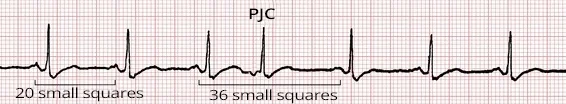
Ngoại tâm thu bộ nối và nghỉ bù không hoàn toàn
- Khoảng PP (RR) có PJC (36) ngắn hơn 2 lần khoảng PP (RR) không có PJC (2x20)
- Ngoại tâm thu bộ nối (PJC)
- Xuất hiện sớm hơn nhát bóp xoang dự kiến
- Phức bộ QRS hẹp (<0,12s)
- Sóng P ngược dòng nằm trước phức bộ QRS
Nghỉ bù hoàn toàn (Complete Compensatory Pause)
Ngoại tâm thu thất (PVC) và nghỉ bù hoàn toàn
- Nghỉ bù hoàn toàn hầu như luôn đi kèm với ngoại tâm thu thất (PVC)
- Khoảng PP (RR) có PVC đúng bằng 2 lần khoảng PP (RR) không có PVC
- Vì PVC xuất phát trong tâm thất và không đi qua nút nhĩ thất, PVC không tái lập nút xoang
- Do đó nút xoang tiếp tục phát xung đều đặn (nhịp xoang)
- Hiếm khi, PVC có thể dẫn truyền ngược dòng qua nút nhĩ thất và tái lập nút xoang
- Vì vậy, PVC hiếm khi có thể gây nghỉ bù không hoàn toàn
- Vì PVC xuất phát trong tâm thất và không đi qua nút nhĩ thất, PVC không tái lập nút xoang
Ngoại tâm thu thất (PVC) và nghỉ bù hoàn toàn
- Khoảng PP (RR) có PVC (42) đúng bằng 2 lần khoảng PP (RR) không có PVC (2x21)
- Ngoại tâm thu thất (PVC)
- Xuất hiện sớm hơn phức bộ QRS xoang dự kiến
- Phức bộ QRS giãn rộng (>0,12s)
- Sóng P được chỉ ra ngay sau QRS
- PVC không tái lập nút xoang vì PVC không đi qua nút nhĩ thất
Ngoại tâm thu bộ nối dẫn truyền lệch hướng (Aberrant PJC)
- Ngoại tâm thu bộ nối dẫn truyền lệch hướng (aberrant PJC)
- Trong quá trình dẫn truyền PJC xuống tâm thất, một phần nào đó của hệ thống dẫn truyền có thể đang ở giai đoạn trơ
- Do đó, sau một PJC rơi vào đúng thời điểm, có thể xuất hiện:
- Block nhánh phải
- Block nhánh trái
- Block phân nhánh trái trước
- Block phân nhánh trái sau
- Ngoại tâm thu bộ nối dẫn truyền lệch hướng thường gặp nhất là có hình ảnh block nhánh phải
- Vì nhánh phải có giai đoạn trơ dài nhất
Nhịp xoang không có ngoại tâm thu bộ nối
- Nút xoang phát xung đều đặn (các sóng P), các xung này được dẫn xuống tâm thất (các phức bộ QRS)
- LTR: thời gian giai đoạn trơ của nhánh trái
- PTR: thời gian giai đoạn trơ của nhánh phải
- Giai đoạn trơ xuất hiện ngay sau khi một xung đã đi qua hệ thống dẫn truyền
- Trong giai đoạn trơ, hệ thống dẫn truyền không dẫn xung
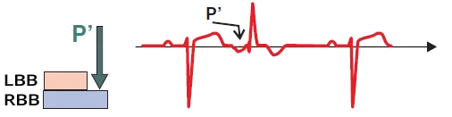
Ngoại tâm thu bộ nối dẫn truyền lệch hướng
- PJC xảy ra vào thời điểm nhánh trái không còn ở giai đoạn trơ
- Nhưng nhánh phải vẫn còn ở giai đoạn trơ, PJC bị block tại nhánh phải
- Do đó, PJC (phức bộ QRS) có hình thái block nhánh phải
- Một sóng P ngược dòng đứng trước QRS
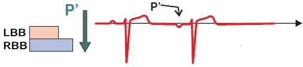
Ngoại tâm thu bộ nối (PJC)
- PJC (P´) xảy ra vào thời điểm các nhánh không còn ở giai đoạn trơ
- PJC (phức bộ QRS) có hình dạng giống hệt một QRS xoang
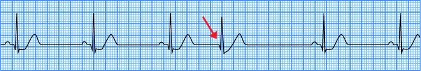
Ngoại tâm thu bộ nối (PJC)
- Phức bộ QRS hẹp (< 0,12s)
- Xuất hiện sớm hơn nhát bóp xoang dự kiến
- Nghỉ bù không hoàn toàn
- Sóng P ngược dòng bị ẩn bên trong phức bộ QRS
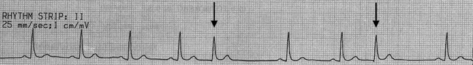
Ngoại tâm thu bộ nối (PJC)
- Trên ECG thấy hai ngoại tâm thu bộ nối
- Phức bộ QRS hẹp (< 0,12s)
- Xuất hiện sớm hơn nhát bóp xoang dự kiến
- Nghỉ bù không hoàn toàn
- Các sóng P ngược dòng bị ẩn bên trong phức bộ QRS
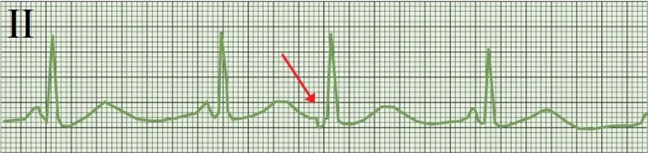
Ngoại tâm thu bộ nối (PJC)
- Phức bộ QRS hẹp (< 0,12s)
- Khoảng PQ < 0,12s
- Nếu khoảng PQ > 0,12s thì đó sẽ là một ngoại tâm thu nhĩ
- Có ổ ngoại vị nằm ở bộ nối nhĩ thất
- Xuất hiện sớm hơn nhát bóp xoang dự kiến
- Nghỉ bù không hoàn toàn
- Sóng P ngược dòng nằm trước phức bộ QRS
- Ở các chuyển đạo dưới (II, III, aVF), sóng P xuất phát từ nút xoang luôn dương
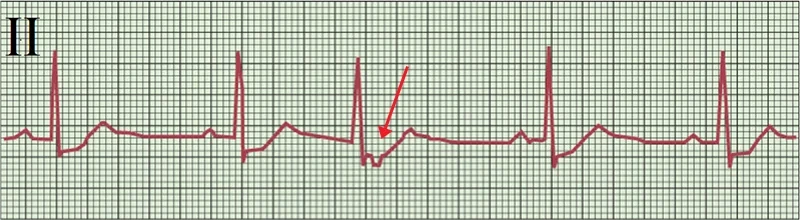
Ngoại tâm thu bộ nối
- Phức bộ QRS hẹp (< 0,12s)
- Xuất hiện sớm hơn nhát bóp xoang dự kiến
- Nghỉ bù không hoàn toàn
- Sóng P ngược dòng nằm sau phức bộ QRS
- Ở các chuyển đạo dưới (II, III, aVF), sóng P xuất phát từ nút xoang luôn dương
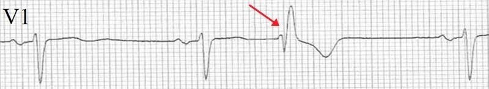
Ngoại tâm thu bộ nối dẫn truyền lệch hướng
- Phức bộ QRS giãn rộng (> 0,12s)
- Với dạng block nhánh phải
- QRS xuất hiện sớm hơn nhát bóp xoang dự kiến
- Nghỉ bù không hoàn toàn
- QRS không có sóng P
- Sóng P ngược dòng bị ẩn bên trong phức bộ QRS
6.3. Ngoại tâm thu thất (Premature Ventricular Complex – PVC) trên ECG
Ngoại tâm thu thất (premature ventricular complex – PVC), nhát bóp thất đến sớm (ventricular premature beat – VPB), ngoại tâm thu thất (ventricular extrasystole – VES), co bóp thất đến sớm (premature ventricular contraction), khử cực thất đến sớm (ventricular premature depolarisation), ổ ngoại vị thất (ventricular ectopic)
Nhịp tim (Heart Rhythm)
Các nhịp tim cơ bản (Basic Heart Rhythms)
- Nhịp tim được quyết định bởi ổ (hoặc các ổ) phát xung với tần số cao nhất (ức chế vượt tần số)
- Có 3 nhịp tim cơ bản
- Nhịp xoang (xung được phát ra từ nút xoang)
- Nhịp bộ nối (xung được phát ra từ bộ nối nhĩ thất)
- Nhịp thất (xung được phát ra từ các sợi Purkinje trong tâm thất)
- Nhịp xoang là nhịp tim sinh lý
- Vì nút xoang nhĩ (SA node) phát xung với tần số cao nhất (ức chế vượt tần số)
- Nút xoang được gọi là chủ nhịp tiên phát (bộ định nhịp)
Ngoại tâm thu thất (Premature Ventricular Complex – PVC)
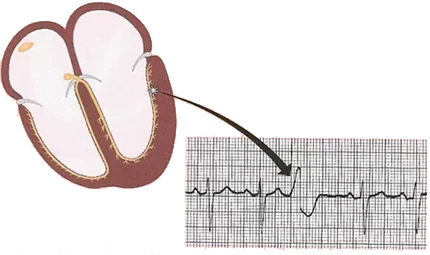
- Thường gặp nhất là xảy ra trên nền nhịp xoang
- Xuất phát từ một ổ ngoại vị ở thất
- Ổ này khử cực sớm về mặt điện học
- Xung hoạt hoá tâm thất (phức bộ QRS giãn rộng)
- Có thể hoạt hoá tâm nhĩ theo hướng ngược dòng
- Dẫn đến mất đồng bộ giữa tâm nhĩ và tâm thất
- Tâm nhĩ được hoạt hoá từ nút xoang
- Tâm thất được hoạt hoá từ ổ ở thất
- PVC thường xuất hiện khi:
- Căng thẳng, cà phê, rượu, hút thuốc, v.v., khoảng 10 lần/giờ
- PVC thường lành tính và không cần điều trị
- Hay gặp hơn ở quả tim có biến đổi cấu trúc
- PVC có thể khởi phát nhịp nhanh do vòng vào lại (re-entry):
- AVNRT (nhịp nhanh vào lại nút nhĩ thất)
- AVRT (nhịp nhanh vào lại nhĩ thất)
- Nhịp nhanh thất
- Xoắn đỉnh (Torsades de Pointes)
- Chúng ta phân biệt 3 loại ngoại tâm thu:
- Trên thất:
- Ngoại tâm thu nhĩ
- Ngoại tâm thu bộ nối
- Ngoại tâm thu thất
- Trên thất:
ECG và ngoại tâm thu thất (ECG and Ventricular Extrasystole)
- Phức bộ QRS giãn rộng (> 0,12s)
- Xung từ thất hoạt hoá tâm thất qua cơ tim dẫn truyền chậm, chứ không qua hệ thống dẫn truyền nhanh
- Ngoại tâm thu nhĩ và ngoại tâm thu bộ nối có QRS hẹp (<0,12s) vì tâm thất được hoạt hoá qua hệ thống dẫn truyền
- Xuất hiện sớm
- Ngoại tâm thu thất (VES) xuất hiện sớm hơn nhát bóp xoang kế tiếp dự kiến
- Bất tương hợp (discordance)
- (đoạn ST và sóng T) có cực tính ngược với (phức bộ QRS)
- Phức bộ QRS trên thất thì tương hợp (concordant) — QRS, ST và sóng T cùng cực tính
- Nghỉ bù hoàn toàn
- Đôi khi có thể gặp nghỉ bù không hoàn toàn (nhát bóp bắt được – captured, hoặc nhát bóp hỗn hợp – fusion beat)
- Không có sóng P trước VES
- Đôi khi có thể xảy ra xung đồng thời ở nút xoang (sóng P) và VES (QRS) - tạo ra một nhát bóp hỗn hợp (fusion beat)
- Khoảng PQ sẽ bị rút ngắn (<0,12s)
- Đôi khi có thể xảy ra xung đồng thời ở nút xoang (sóng P) và VES (QRS) - tạo ra một nhát bóp hỗn hợp (fusion beat)
- Sóng P ngược dòng (âm) sau VES
- Đôi khi xung từ tâm thất có thể hoạt hoá tâm nhĩ theo hướng ngược dòng
Bất tương hợp (Discordance)
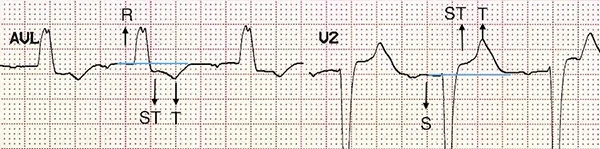
Bất tương hợp và ngoại tâm thu thất
- Trên ECG thấy hai chuyển đạo (aVL, V2)
- QRS giãn rộng (>0,12s)
- Bộ ba ngoại tâm thu thất
- 3 ngoại tâm thu thất liên tiếp
- Bất tương hợp
- Cực tính ngược nhau giữa (QRS) và (đoạn ST-T)
Nghỉ bù hoàn toàn (Full Compensatory Pause)
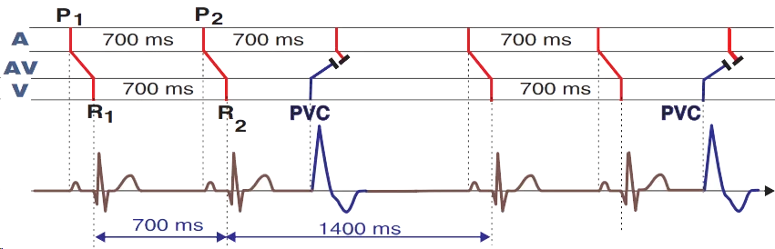
Nghỉ bù hoàn toàn và ngoại tâm thu thất
- Sơ đồ bậc thang minh hoạ đường lan truyền của xung qua hệ thống dẫn truyền
- Nút xoang phát xung đều đặn (khoảng P1-P2: 700ms)
- Ngoại tâm thu thất xuất hiện sớm hơn phức bộ QRS xoang
- Không có sóng P nào được tạo ra
- Ngoại tâm thu thất lan truyền ngược dòng lên tâm nhĩ qua nút nhĩ thất
- Tại nút nhĩ thất, ngoại tâm thu gặp xung từ nút xoang và các xung bị tái lập (giai đoạn trơ)
- Sau ngoại tâm thu là một khoảng nghỉ bù hoàn toàn
- Khoảng RR có ngoại tâm thu (1400ms) đúng bằng 2 lần khoảng RR không có ngoại tâm thu (2x700ms)
- Điều này là do nút xoang đã không bị tái lập (xung từ ngoại tâm thu không lên được tâm nhĩ tới nút xoang)

Nghỉ bù hoàn toàn và ngoại tâm thu thất
- Khoảng RR có ngoại tâm thu đúng bằng 2 lần khoảng RR không có ngoại tâm thu
- Với ngoại tâm thu thất, nghỉ bù hoàn toàn thường gặp hơn nghỉ bù không hoàn toàn
Nghỉ bù không hoàn toàn (Incomplete Compensatory Pause)
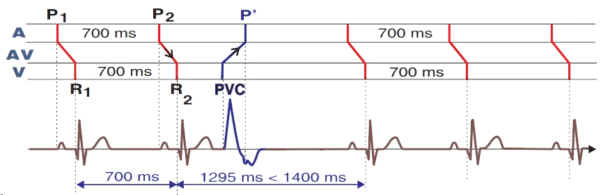
Nghỉ bù không hoàn toàn và ngoại tâm thu thất
- Ngoại tâm thu thất (VES) dẫn truyền ngược dòng qua nút nhĩ thất lên tâm nhĩ và tái lập nút xoang (P´)
- VES tới nút xoang trước khi nút xoang kịp khử cực
- Xuất hiện một sóng P ngược dòng (âm) (P´)
- Nút xoang sau khi bị tái lập lại bắt đầu phát xung (các sóng P)
- Sau VES là một khoảng nghỉ bù không hoàn toàn
- Khoảng RR có VES (1295ms) ngắn hơn 2 lần khoảng RR không có VES
- Nghỉ bù không hoàn toàn hiếm gặp với VES
- Vì VES hiếm khi tái lập nút xoang theo hướng ngược dòng
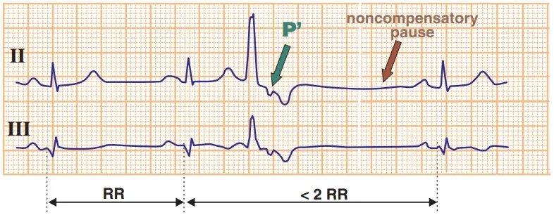
Nghỉ bù không hoàn toàn và ngoại tâm thu thất
- Khoảng RR có VES ngắn hơn hai lần khoảng RR không có VES
- Sóng P ngược dòng (P´)
- Nghỉ bù không hoàn toàn xuất hiện khi nút xoang bị tái lập, đặc biệt trong:
- Ngoại tâm thu nhĩ
- Ngoại tâm thu bộ nối
- Với VES thì hiếm, vì VES hiếm khi tái lập nút xoang theo hướng ngược dòng
Phân loại ngoại tâm thu thất (Ventricular Extrasystoles - Classification)
- VES xen kẽ (interpolated VES)
- VES cuối tâm trương (end-diastolic VES)
- Hiện tượng R-on-T
- VES theo vị trí khu trú
- VES theo số lượng ổ ngoại vị
- Đơn ổ (unifocal)
- Đa ổ (multifocal)
- VES theo tính lặp lại
- Nhịp đôi (bigeminy)
- Nhịp ba (trigeminy)
- Nhịp bốn (quadrigeminy)
- Cặp đôi (couplet)
- Bộ ba (triplet, salvo)
- VES được phân loại dựa trên nhiều tiêu chí, bao gồm:
- Ổ ngoại vị nằm ở đâu?
- Có bao nhiêu ổ ngoại vị?
- VES xuất hiện khi nào (ở pha nào của chu chuyển tim)?
- Các VES có lặp lại không?
VES xen kẽ (Interpolated VES)
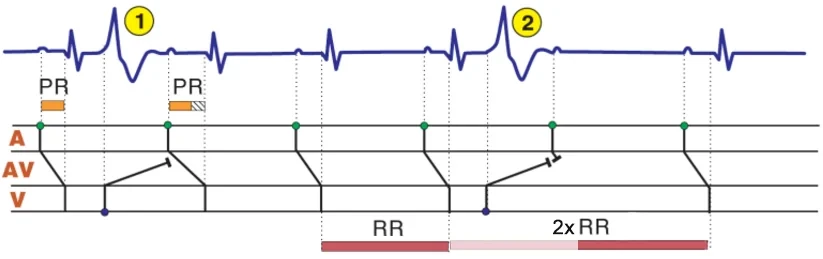
Ngoại tâm thu thất xen kẽ
- (1) Ngoại tâm thu thất xen kẽ
- Xảy ra trên nền nhịp xoang, thường gặp nhất là kèm nhịp chậm xoang
- Nằm kẹp giữa 2 nhát bóp xoang
- Đôi khi được gọi là ngoại tâm thu kiểu "kẹp bánh mì" (sandwich extrasystole)
- Không có khoảng nghỉ bù
- Khoảng PQ (PR) sau VES xen kẽ bị kéo dài
- Vì đã xảy ra dẫn truyền ẩn (concealed conduction) tại nút nhĩ thất
- (2) Ngoại tâm thu thất kinh điển
- Nghỉ bù hoàn toàn (nút xoang không bị tái lập)
- Dẫn truyền ẩn (concealed conduction)
- Xảy ra với VES xen kẽ trên nền nhịp xoang (nhịp chậm)
- VES không gây hoạt hoá ngược dòng tâm nhĩ
- Xung ngược dòng chỉ xâm nhập một phần vào nút nhĩ thất (không thấy được trên ECG)
- Sự xâm nhập ngược dòng vào nút nhĩ thất đã làm thay đổi dẫn truyền điện học sao cho:
- Xung kế tiếp (từ nút xoang) được dẫn truyền chậm hơn
- Trên ECG, ta thấy một khoảng PQ kéo dài sau VES xen kẽ
- Dẫn truyền ẩn chỉ xảy ra khi VES rơi vào đúng một thời điểm nhất định
- Điều này thường gặp với ngoại tâm thu xen kẽ
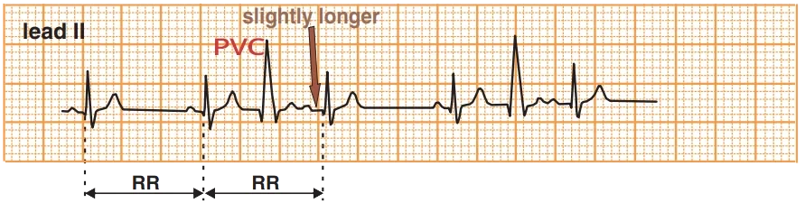
VES xen kẽ
- VES nằm kẹp giữa 2 nhát bóp xoang
- Giống như một chiếc "bánh mì kẹp" (sandwich extrasystole)
- Khoảng RR có VES bằng đúng khoảng RR không có VES
- Khoảng PQ sau VES xen kẽ hơi kéo dài
- VES đã xâm nhập ngược dòng vào nút nhĩ thất và làm thay đổi đặc tính điện học của nó (dẫn truyền ẩn)
Ngoại tâm thu thất cuối tâm trương (End-Diastolic PVC)
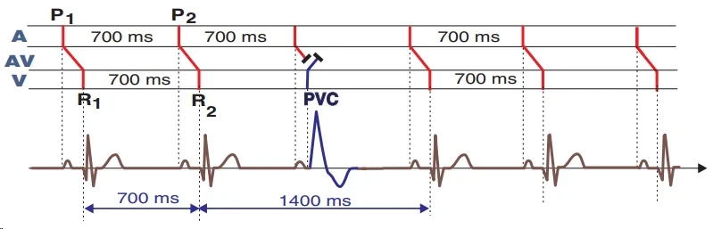
Ngoại tâm thu thất cuối tâm trương
- Xuất hiện vào cuối thì tâm trương
- Sau sóng P, ngay trước phức bộ QRS xoang dự kiến
- Có nghỉ bù hoàn toàn
- Vì nút xoang không bị tái lập theo hướng ngược dòng
- Khoảng PQ rút ngắn
- VES đi ngay sau sóng P
- Lưu ý rằng sóng P (xung xoang) không hoạt hoá tâm thất
- Tâm thất được hoạt hoá bởi ngoại tâm thu thất
- Xung từ VES và từ nút xoang gặp nhau và bị tái lập tại nút nhĩ thất
- Tâm nhĩ được hoạt hoá hoàn toàn từ nút xoang
- Tâm thất được hoạt hoá hoàn toàn từ VES
- Nhát bóp hỗn hợp (fusion beat)
- Xung từ nút xoang và từ VES gặp nhau trong tâm thất (chứ không phải tại nút nhĩ thất như trong VES cuối tâm trương)
- Tâm thất được hoạt hoá bởi 2 xung
- Thường gặp nhất trong nhịp nhanh thất
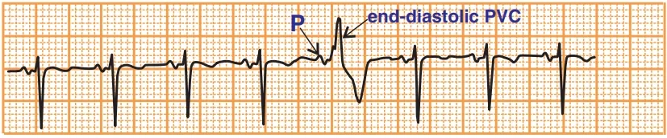
Ngoại tâm thu thất cuối tâm trương
- VES xuất hiện ngay sau sóng P
- Phức bộ QRS giãn rộng (>0,12s)
- Bất tương hợp
- Nghỉ bù hoàn toàn
Hiện tượng R-on-T (R-on-T Phenomenon)
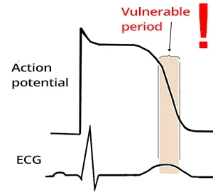
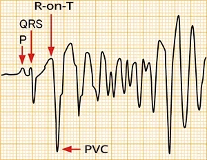
- Hiện tượng R-on-T
- Là một PVC rơi trên sóng T
- Thời kỳ dễ tổn thương (vulnerable period)
- Đây là pha cuối của quá trình tái cực điện thế hoạt động
- Trên ECG, nó biểu hiện dưới dạng sóng T
- Nó kéo dài theo khoảng QT
- Hiện tượng R-on-T là một nguy cơ
- Trong nhồi máu cơ tim cấp
- Trong các trường hợp hạ kali máu nặng
- Khi có khoảng QT kéo dài
- 1/3 số ca nhịp nhanh thất được khởi phát bởi hiện tượng R-on-T:
- Rung thất
- Xoắn đỉnh (Torsades de Pointes)
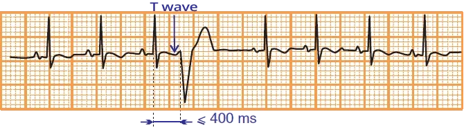
Hiện tượng R-on-T (PVC rơi trên sóng T)
- Hiện tượng R-on-T là một PVC rơi trên sóng T
- Khoảng ghép < 400ms
- Đây là khoảng cách giữa PVC và phức bộ QRS đứng trước
- Hiện tượng R-on-T là một nguy cơ
- Trong nhồi máu cơ tim cấp
- Trong các trường hợp hạ kali máu nặng
- Khi có khoảng QT kéo dài
- Trong những trường hợp này, nó có thể khởi phát:
- Rung thất
- Xoắn đỉnh (Torsades de Pointes)
Định khu ngoại tâm thu thất (Localization of Ventricular Extrasystole)
- Chỉ cần một chuyển đạo ECG là đủ để chẩn đoán PVC
- Dựa vào ECG 12 chuyển đạo, có thể định khu được ổ ngoại vị trong tâm thất đã tạo ra PVC
- Tức là ổ đã sinh ra ngoại tâm thu thất
- Sử dụng các chuyển đạo trước tim (V1-V6) và các chuyển đạo dưới (II, III, aVF), có thể định khu ổ vào 4 góc phần tư
- Một thuật toán đơn giản được dùng để định khu
- 1. Trước hết, đánh giá các chuyển đạo trước tim
- 2. Sau đó đánh giá các chuyển đạo dưới
1. Chuyển đạo trước tim (V1-6): thất trái hay thất phải?
- Dựa vào các chuyển đạo trước tim,
ổ được định khu ở thất trái hay thất phải - Dạng block nhánh phải -> Ổ nằm ở thất trái
- Dạng block nhánh trái -> Ổ nằm ở thất phải
2. Chuyển đạo dưới (II, III, aVF): mỏm tim hay đáy tim?
- Định khu ổ ở mỏm tim hay đáy tim
- QRS dương (II, III, aVF) -> Ổ nằm ở đáy tim
- QRS âm (II, III, aVF) -> Ổ nằm ở mỏm tim
Ổ nằm ở thất phải, tại đáy tim
- Vectơ tim hướng từ thất phải sang thất trái:
- Hình ảnh block nhánh trái
- S sâu (V1)
- R ưu thế (V6)
- Hình ảnh block nhánh trái
- Vectơ hướng từ đáy tim xuống mỏm tim
- Hướng về phía các chuyển đạo dưới
- R ưu thế ở các chuyển đạo dưới (II, III, aVF)
Ngoại tâm thu thất đơn ổ (Unifocal Premature Ventricular Complex)
- Dựa trên số lượng ổ ngoại vị tạo ra PVC, PVC được phân loại thành:
- Ngoại tâm thu thất đơn ổ (unifocal PVC)
- 1 ổ ngoại vị ở thất
- Ngoại tâm thu thất đa ổ (multifocal PVC)
- Ít nhất 2 ổ ngoại vị ở thất
- Ngoại tâm thu thất đơn ổ (unifocal PVC)
Ngoại tâm thu thất đơn ổ
- Có một ổ ngoại vị trong tâm thất
- Ổ này phát xung từng lúc
- Nó luôn có cùng một hình thái
- Vì mỗi PVC đều xuất phát từ cùng một ổ (có cùng một vectơ thất)
- Nó có cùng khoảng ghép
- Đây là khoảng cách tính bằng ms giữa PVC và phức bộ QRS đứng trước
Ngoại tâm thu thất đa ổ (Multifocal Premature Ventricular Complex)
Ngoại tâm thu thất đa ổ
- Có ít nhất 2 ổ ngoại vị trong tâm thất
- Các ổ này phát xung từng lúc
- Các PVC từ mỗi ổ
- Có hình thái khác nhau
- Có khoảng ghép khác nhau
- Vì mỗi ổ có một vectơ thất khác nhau
Ngoại tâm thu thất theo tính lặp lại (Ventricular Extrasystoles by Repetition)
- Dựa trên tính lặp lại, PVC được phân loại thành:
- Nhịp đôi (bigeminy)
- Nhịp ba (trigeminy)
- Nhịp bốn (quadrigeminy)
- Cặp đôi (couplet)
- Bộ ba (triplet, salvo)
Nhịp đôi
- Cứ nhát bóp thứ hai là một ngoại tâm thu thất
- Trên ECG có 4 ngoại tâm thu thất kết thành nhịp đôi
- QRS thứ nhất (hẹp) là nhát bóp xoang
- QRS thứ hai (giãn rộng) là PVC
Nhịp ba
- Cứ nhát bóp thứ ba là một ngoại tâm thu thất
- Trên ECG có 3 ngoại tâm thu thất kết thành nhịp ba
Nhịp bốn
- Cứ nhát bóp thứ tư là một ngoại tâm thu thất
- Trên ECG có 3 ngoại tâm thu thất kết thành nhịp bốn
- Giả định rằng cũng có 3 phức bộ QRS xoang trước ngoại tâm thu đầu tiên
Cặp đôi
- Các ngoại tâm thu thất xuất hiện thành từng đôi (2 ngoại tâm thu đi liền nhau)
- Cặp đôi đa ổ
- Cặp đôi thứ nhất và cặp đôi thứ hai có hình dạng khác nhau
- Vì chúng xuất phát từ các ổ ngoại vị khác nhau
- Cặp đôi thứ nhất là một nhát bóp hỗn hợp (tâm thất được hoạt hoá đồng thời từ nút xoang và từ ngoại tâm thu)
- Chủ yếu gặp trong nhịp nhanh thất
- Cặp đôi thứ nhất và cặp đôi thứ hai có hình dạng khác nhau
Bộ ba (salvo)
- Ba ngoại tâm thu thất liên tiếp
- Bộ ba đôi khi được gọi là chuỗi thất
(ventricular salvo) - Chuỗi thất
- Đôi khi được định nghĩa là một bộ ba
- Trong các bối cảnh khác, nó chỉ 3 đến 6 ngoại tâm thu liên tiếp, và được xếp là nhịp nhanh thất không bền bỉ
Nhịp nhanh thất (Ventricular Tachycardia)
- Nhịp nhanh thất được định nghĩa là một chuỗi ít nhất 4 ngoại tâm thu thất (VES) liên tiếp:
- Nhịp nhanh thất không bền bỉ (kéo dài < 30 giây)
- Nhịp nhanh thất bền bỉ (kéo dài > 30 giây)
Nhịp nhanh thất không bền bỉ
- Nhịp nhanh thất không bền bỉ
- Gồm ít nhất 4 VES liên tiếp
- Tự chấm dứt trong vòng 30 giây
- Trên ECG, 11 VES chấm dứt trong vòng 30 giây cho thấy đây là nhịp nhanh thất không bền bỉ
- Nếu kéo dài hơn 30 giây, nó được xếp là nhịp nhanh thất bền bỉ
Nhịp nhanh thất bền bỉ
- Nhịp nhanh thất bền bỉ
- Được định nghĩa là một chuỗi VES liên tiếp kéo dài ít nhất 30 giây
- Bản ghi ECG này tiếp diễn không thay đổi và kéo dài hơn 30 giây
- Nó được xếp là nhịp nhanh thất đơn dạng bền bỉ
Phân độ Lown của ngoại tâm thu thất (Lown Classification of PVCs)
Độ | Loại ngoại tâm thu thất (PVC) |
0 | Không có PVC |
I | PVC đơn ổ <30/phút |
II | PVC đơn ổ ≥ 30/phút |
III | PVC đa ổ |
IVA | Cặp đôi (couplets) |
IVB | Bộ ba / Nhịp nhanh thất không bền bỉ |
V | Hiện tượng R-on-T |
- Bảng phân độ này (Lown's Grading of PVCs) được xây dựng cho bệnh nhân hội chứng vành cấp
- Do đó, giá trị tiên lượng của nó ở các nhóm bệnh nhân khác là chưa rõ ràng
- Tuy nhiên, nó cung cấp thông tin về tần suất PVC ở bệnh nhân
Nguồn tài liệu (Sources)
Nguồn: ECG BOOK — www.ecgbook.com
- ECG from Basics to Essentials Step by Step
- Litfl.com
- Ecgwaves.com
- Metealpaslan.com
- Medmastery.com
- Uptodate.com
- Ecgpedia.org
- Wikipedia.org
- Strong Medicine
- Understanding Pacemakers